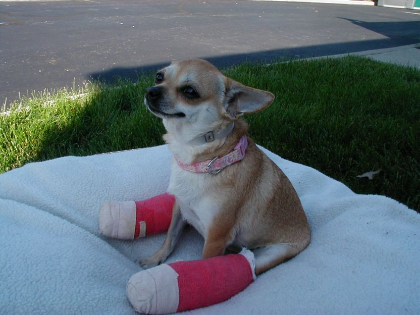
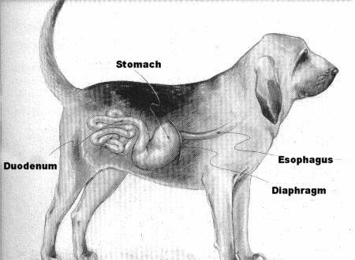
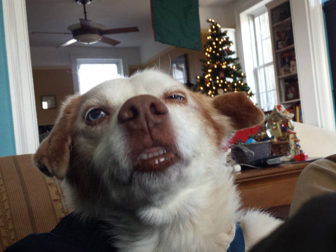

ПОРОДЫ |
УХОД |
КОРМЛЕНИЕ |
ДРЕССИРОВКА |
ЗАБОЛЕВАНИЯ |
О НАС |

Раны - открытые повреждения тканей организма, сопровождающиеся нарушением целостности кожи или слизистых оболочек. По характеру повреждений раны бывают: резаные, рубленные, колотые, рваные, ушибленные. По глубине: поверхностные, когда повреждена лишь кожа и подкожная клетчатка; глубокие, с повреждением более глубоких тканей (очень опасны полостные, проникающие во внутренние органы, могут быть осложнены воспалительными процессами). В случае ран, большое значение имеет оказание первой помощи - это в некоторых случаях очищение ран от грязи, дезинфекция и наложение повязок. В случае кровотечения - оказание помощи к остановке истечения крови (перевязка непосредственно поврежденного сосуда, производится врачом) Ушибы или контузия - получается от механического воздействия на тело животного какого-либо тупого предмета - удар палкой, камнем, падающим предметом, падение собаки с высоты на твердую почву. При ушибе целостность кожи не нарушается, но лежащие под ней ткани могут быть размозжены, куда могут попасть гноеродные микробы. При ушибах могут появиться - кровоподтеки, припухлости, гематомы. При ушибах головы часто наблюдается потеря сознания, позвоночного столба - параличи зада или конечностей. Первая помощь: дезинфекция, холод (в первые сутки), потом согревающий компресс (на 4 сутки), массаж. Если есть нагноение, то собаку необходимо доставить к врачу; Переломы и вывихи - обычно имеют одни и те же механические причины. В каждом случае перелома трубчатых или плоских костей наблюдается разрыв мышц, фасций сосудов, нервов, органов; при открытых переломах повреждаются кожа и другие ткани. Переломы различают закрытые и открытые, простые и сложные (наложение неподвижной повязки, покой, ветврач), врожденные. При вывихе происходит смещение суставных поверхностей сустава, сопровождающееся резкой болезненностью изменением формы и отсутствием движения сустава (вправление сустава, наложение повязки, холод, покой). Растяжение и разрывы связок, происходящих в результате какого-либо механического воздействия (наложение неподвижной повязки, холод, покой, после снятия воспаления - спиртовые компрессы и горячие ванны, массаж и пассивные движения конечности). К наружным незаразным болезням относятся и - ожоги, отморожения, экземы (расположение к заболеванию зависит от общего состояния организма), укусы змей и жалящих насекомых, болезни: уха, глаз. |

Болезни органов пищеварения - основные причины заболевания, это погрешности в кормлении собак. К ним относятся: стоматит (первичный и вторичный), воспаление желудка и кишечника (рассматривают вместе, т.к. сопутствуют друг другу; бывают первичными и вторичными); отравления (ядами, угарным газом, сулемой, испорченным мясом, медью). Болезни органов дыхания - большей частью бывают простудного характера, от вдыхания раздражающих веществ или пыли, очень часто наблюдается у охотничьих собак вследствие резкого охлаждения разгоряченным бегом, нахождением в холодной воде, пребывание под холодным дождем в холодную, сырую погоду. Это: ринит (насморк), ларингит (катар гортани), воспаление легких и бронхов (болезнь имеет самый высокий процент смертности и требует самого серьезного внимания). Болезни мочеполовых органов:
Болезни органов движения: ревматизм мышечный и суставной, основной причиной которых является инфекция, а предрасполагающую роль играет простуда. Главное в лечении - это сухое и теплое помещение, тепло (согревающие компрессы) и втирание соответствующих болезни лекарств и мазей. Болезни обмена веществ: рахит, гипоавитаминоз взрослых собак. |

Возбудителями заразных болезней являются: бактерии, грибки, простейшие паразиты животного происхождения и фильтрующиеся вирусы. Проникновение возбудителей заразных заболеваний в организм происходит разными путями: через поврежденную кожу, пищеварительный, дыхательный аппараты, слизистая оболочка которых нарушена. Болезни, вызываемые микробами и вирусами, называются инфекционными. ИНФЕКЦИОННОЕ ЗАБОЛЕВАНИЕ - это такая болезнь, которая не только вызвана, но и поддерживается присутствием в организме живого повреждающего чужеродного агента (возбудителя). Наиболее опасным путем распространения инфекционных болезней является прямой, непосредственный контакт восприимчивого животного с больным или скрытым микробоносителем (при обнюхивании, укусах, царапинах и пр.). Передача заразного начала происходит не только от собаки к собаке, они могут заражаться и от других видов домашних животных и человека, а также сами заражать других животных и человека. Не всякое внедрение болезнетворных микробов в организм вызывает заболевание. Для борьбы с инфекцией организм имеет целую систему самозащиты, в котором участвует весь организм, как целостная система в единстве с окружающей средой. Давно замечено, что переболевшие какой-либо инфекцией животные становятся устойчивыми к повторному заражению. Такая устойчивость обусловлена формированием иммунитета. Иммунитет, приобретенный организмом в результате болезни, называют активным приобретенным иммунитетом. Он обусловлен синтезом в организме специфических лимфоцитов и антител, которые при повторном столкновении с возбудителем инфекции, уничтожают его, не позволяя нанести вред организму. Антитела к различным возбудителям могут сохраняться в организме от нескольких недель до многих лет, обеспечивая ему длительную защиту от заболевания. Такой же иммунитет возникает в результате вакцинации животных. Цель вакцинации - создать активный иммунитет, не допуская заболевания животного. Вакцины содержат ослабленные или убитые вирусы и бактерии, неспособные вызвать явного заболевания животного, но обеспечивающие формирование иммунитета за счет содержащихся в них антигенов. Убитые вакцины создаются из полностью обезвреженных (убитых) микроорганизмов. Такие вакцины не способны вызвать заболевание даже у ослабленных животных. Иммунитет от введения убитых вакцин менее стойкий и несколько слабее по сравнению с живыми вакцинами. Живые вакцины создаются из специально выращенных, сильно ослабленных штаммов возбудителей, они вызывают легкую (субклиническую) инфекцию, обеспечивая формирование наиболее напряженного и стойкого иммунитета. Вакцины различаются по количественному содержанию в них вирусов или бактерий (титру антигена). Чем выше титр антигена в вакцине, тем более напряженный иммунитет формируется после ее введения, и тем больше вероятность появления симптомов заболевания и клинического развития инфекции при введении живой вакцины (особенно ослабленным животным). (По отношению большинства вакцин, первичная вакцинация для формирования напряженного иммунитета должна проводиться двукратно, не зависимо от возраста животного. Стандартная схема вакцинации щенков включает первую прививку в возрасте 8 - 9 недель и повторную ревакцинацию в 12 недель. В более раннем возрасте формированию иммунитета препятствует высокое содержание в крови щенка антител, полученных им с молозивом матери в первые дни жизни. Уровень антител в крови щенков постепенно снижается, и они могут стать, восприимчивы к инфекциям в возрасте 6 - 12 недель. Так как возбудители, входящие в состав вакцин менее агрессивны, чем естественные формы, иммунный ответ на введение вакцины у щенка может сформироваться только при более низком уровне антител, т.е. в более поздние сроки: 8 - 12 недель. Устойчивый иммунитет к инфекциям формируется только спустя 10 - 14 дней после введения вакцины, причем в этот период организм щенка ослаблен и более чувствителен к естественному заражению. В последующем, для поддержания иммунитета, собак, как правило, ревакцинируют ежегодно. Вакцинацию собак против бешенства проводят, начиная с 12-ти недельного возраста, вакцину вводят однократно, а затем проводят ежегодную ревакцинацию). |
Ухаживать за большой собакой накладно в плане времени. Большие породы собак обнаруживают отличную мускулатуру и мощный скелет. Колоссальный физический потенциал вызывает желание и нужду в длительных прогулках. Конкуренцию составят маленькие собачки, которых допустимо выводить лишь на 5-7 мин. Выгул крупных собак советуется осуществлять на малолюдной либо безлюдной территории. Чтобы любимец рос воспитанным и сильным, потребуется уделять внимание его физической подготовке. Рекомендуется водить питомца на специальные площадки для тренировки собак. Лучше посещать места выгула рано утром либо вечером, на закате. Это объясняется меньшим количеством людей и собак, далеко не все животные адекватно реагируют друг на друга. Перед первым походом на территорию тренировочного комплекса рекомендуется провести с собакой воспитательную беседу. Нужно пройтись по улице и посмотреть, как животное реагирует на проходящих мимо собак. При проявлении малейшей агрессии тренировку вместе с прочими животными придётся отменить.Перед полноценным «выходом в свет» собака обязана знать как минимум простейшие команды, неукоснительно слушаться хозяина. Иерархия остаётся обозначена в уме питомца, иначе длительная тренировочная прогулка станет потрясением для обоих: хозяина и животного. Ухаживать за маленькой собакой в плане выгула гораздо проще. Малыши не требуют длительных прогулок. К примеру, породы пекинес и ши-тцу сами рвутся домой после выполнения уличных дел. Объяснение простое. Летом пёсикам жарко, они испытывают жажду, поэтому спешат домой. Зимой – лапкам холодно. Длительные прогулки возможны лишь весной и осенью, при отсутствии шквального ветра. |